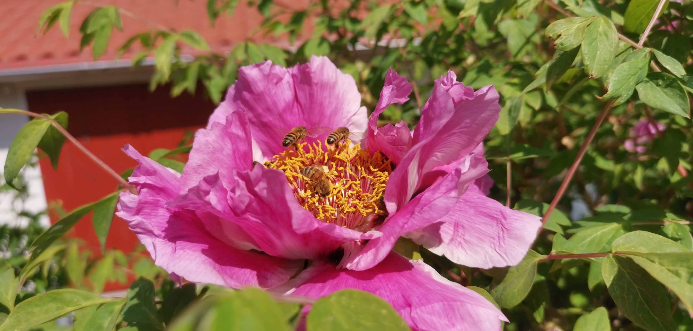
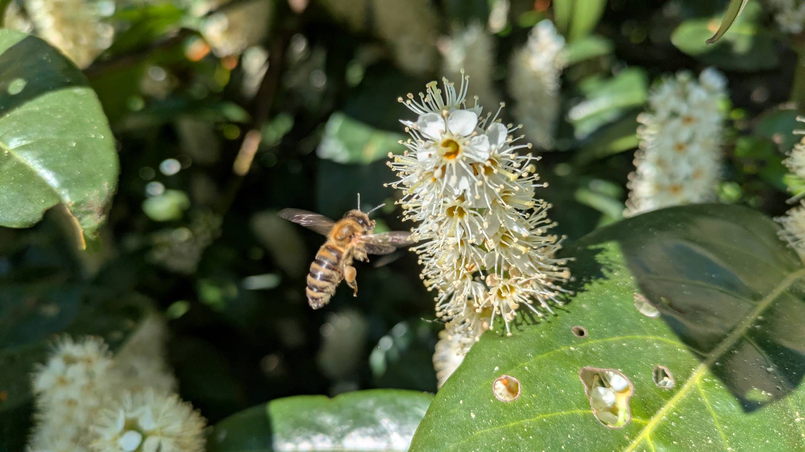

Rädda våra pollinatörer!

Ungefär 90 % av alla vilda växter och blommor behöver pollinatörer. Det behöver även 75 % av världens jordbruksgrödor, såsom frukter, bär, grönsaker, nötter och olika oljeväxter.

I Sverige är inte honungsbin hotade, det finns många hängivna biodlare som ser till att de överlever. Vilda bin är det dock värre för, flera av de 270 arter som lever i Sverige är hotade och en del av dem har inte setts till på många år. En av anledningarna är att deras naturliga bostäder blir allt färre med människans moderna skogsbruk.